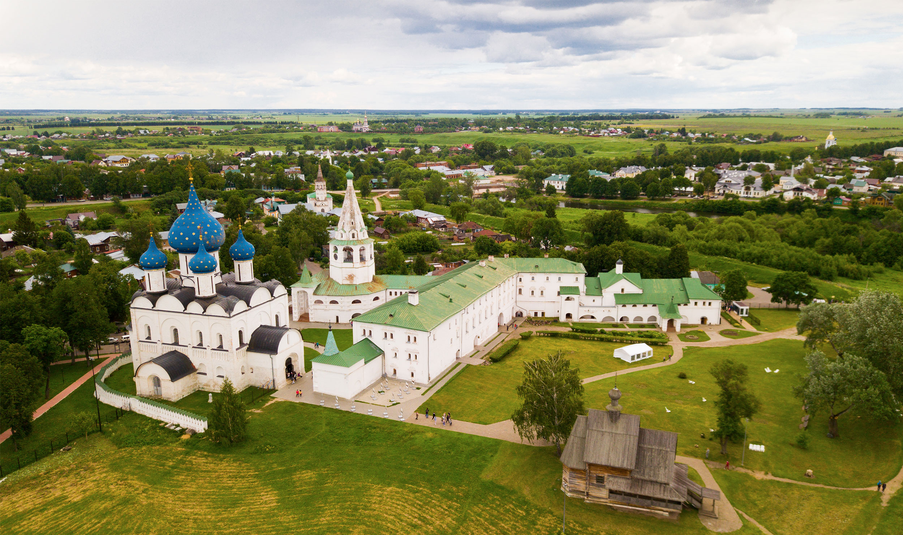

Суздаль — город-музей
Суздаль — один из древнейших русских городов. Сейчас этот уникальный город-музей (32 церкви, 5 монастырских ансамблей, 14 колоколен) включен ЮНЕСКО в список всемирного наследия.

Что посетить:
- Спасо-Евфимиев монастырь: знаменит своим колокольным звоном и мощными стенами.
- Музей деревянного зодчества: здесь собраны уникальные постройки крестьянского быта.
- Суздальский кремль: сердце города с богатейшими собраниями древних икон.
Вернуться на главную